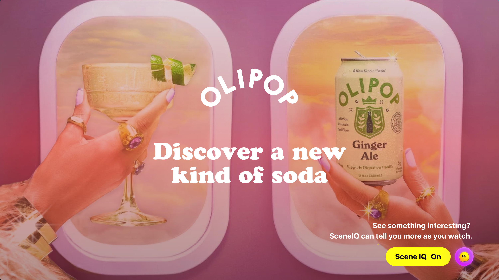
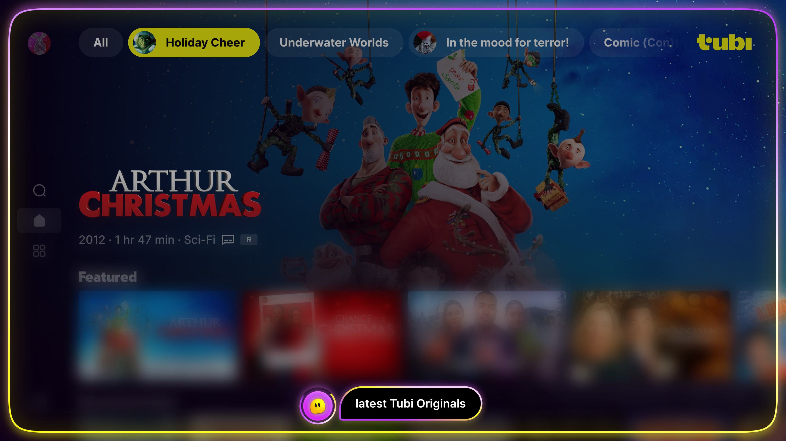

SceneIQ
Product experience
Prompts become useful moments inside playback
The product surface is not a generic overlay. It is contextual, scene-aware, and designed for optional interaction.

In-player prompt
A recognition or scene prompt appears as one clear state tied to the moment on screen.

Contextual brand moment
Relevant partner or object curiosity can become an optional prompt without interrupting playback.

Discovery follow-through
Engagement can inform the next title, rail, or discovery surface after the prompt.